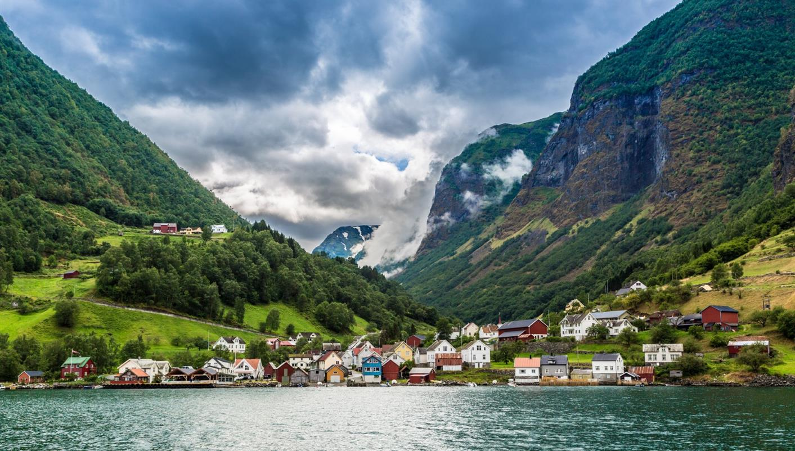

Noruega
Um extenso litoral com fiordes impressionantes e auroras boreais durante o inverno do hemisfério norte fazem parte das atrações da Noruega. A vibrante capital, Oslo, é um ponto de entrada perfeito para curtir alguns dias na cidade antes de se aventurar na natureza do país.
Roma, Itália
Roma tem um charme que encanta os numerosos turistas que visitam a cidade.Uma cozinha deliciosa e monumentos históricos como a Fontana di Trevi e o Coliseu são alguns dos ingredientes que fazem da capital italiana um destino único.

Paris, França
Não é por acaso que Paris é um destino que faz sonhar pessoas do mundo inteiro. Passeios de barco pelo Rio Sena, visita a cartões-postais míticos, como a Torre Eiffel e a Catedral de Notre Dame, e jantares gastronômicos acompanhados de excelentes vinhos locais são apenas algumas das opções em uma das cidades mais incríveis do planeta.

Esperamos que tenha gostado do site, foi um prazer faze-lo, para ajudar as pessoas a localizarem um local para viajar.